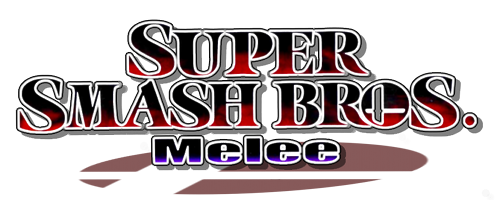

Super Smash Brothers is a series of platform fighting games developed by Nintendo.
This fighting series is distinct from others for multiple reasons. The most prominent
being the fact that the series acts as a massive crossover for many famous video games
such as Mario, Pokemon, and The Legend of Zelda. One of the most unique aspects
of Smash Brothers is that the game is loved both by casual and competitive players.
There are five games in total which are shown below.
Smash 64 is the first game in the series
and was released on the Nintendo 64!

Smash Melee is the second game in the series
and was released on the GameCube!
It's also still played prominently today competitively.
Smash Brawl is the third game in the series
and was released on the Wii!
Smash for Wii U and 3DS is the fourth game in the series
and was released on the Wii U and 3DS!
Smash Ultimate is the fifth and most recent game in the series and
was released on the Nintendo Switch! As it is the newest game in the series,
its competitive scene is thriving.